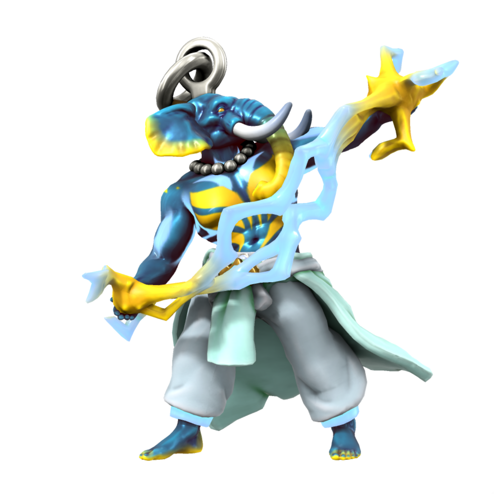

Ouron

Ouron is the essence of the open sky - thunder, lightning, clouds and the air are all His domain. As one of the most powerful and important fey, He features in most pantheons across Iuncterra.
Ouron takes form on the mortal plane as a Loxodon, the species being created from Orc by His interference to exist in His image. Despite this, most Loxodon now follow the Kasharite faith, worshipping the Eternal Flame of the Kash dynasty.
Aliases
| Alias | Pronunciation | Language(s) |
|---|---|---|
| Ouron Teng | oʊrɒn tɛŋg | Atkani |
| Ötengr | ltɛŋgr | Uttic |
| Pater Oura | peɪtər oʊrə | Dracean |
| Auro | aʊrø | Kypritic |